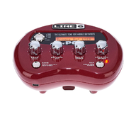

 Sorry, JavaScript needs to be enabled to run this application
Pocket POD Editor
loading...
Edit Line6 Pocket POD online or installable web-app. Full MIDI support and also undocumented features (Wah pedal etc...)